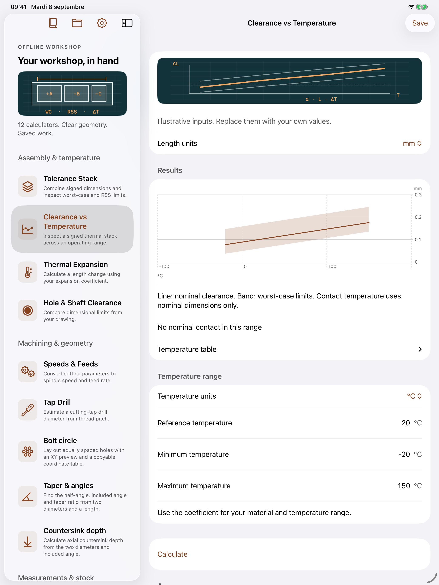

12 outils pour votre atelier
Suivez une chaîne de cotes signées, des données du plan aux limites au pire des cas, au RSS et au jeu thermique.
Découvrir le fonctionnementPour iPhone et iPad · Français, anglais et espagnol. La disponibilité sur l’App Store sera annoncée ici.

Du plan au calcul enregistré
Saisir vos cotes
Indiquez le sens d’addition ou de soustraction, la cote nominale et les écarts inférieur et supérieur indépendants.
Examiner le résultat
Comparez les limites au pire des cas et le RSS. Pour le jeu thermique, renseignez vos coefficients et votre plage de température.
Conserver le contexte
Enregistrez des projets nommés et des cas modifiables avec des notes. Préparez un PDF et choisissez où le partager.
Les calculs d’atelier au même endroit
Calculez une dilatation, une vitesse de rotation et une avance à partir de vos paramètres, un diamètre de perçage approché pour taraudage par coupe, ou le jeu entre vos limites d’alésage et d’arbre. Passez des millimètres aux pouces et des degrés Celsius aux degrés Fahrenheit. Cercle de perçage, position vraie 2D, conversions d’atelier, masse de barres et tubes, conicité et profondeur de fraisure. Recherchez vos outils, ajoutez des favoris et consultez les méthodes illustrées avec exemples guidés.
Une aide au calcul pour vérifier vos propres données. Vérifiez plans, coefficients, hypothèses de fabrication et résultats avant usinage. Aucun tableau ISO sous licence, conseil de coupe par matériau ni certification de sécurité n’est inclus.